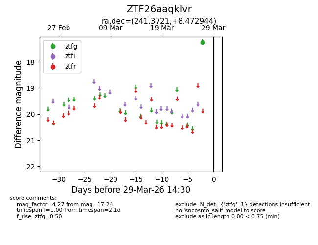
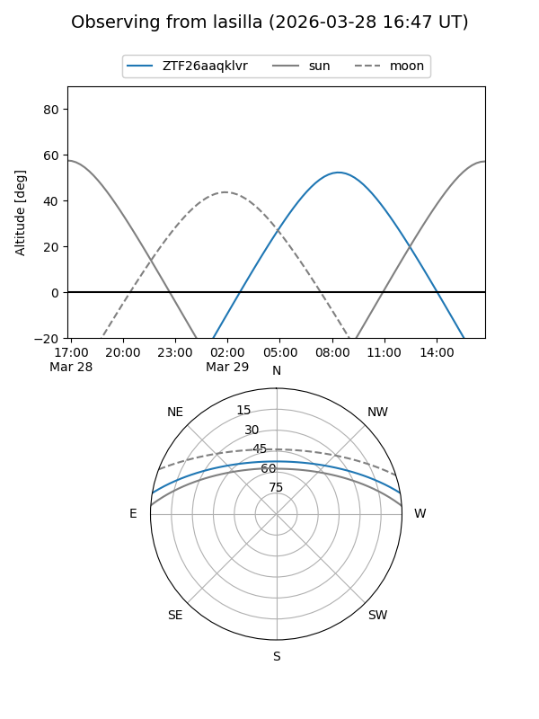
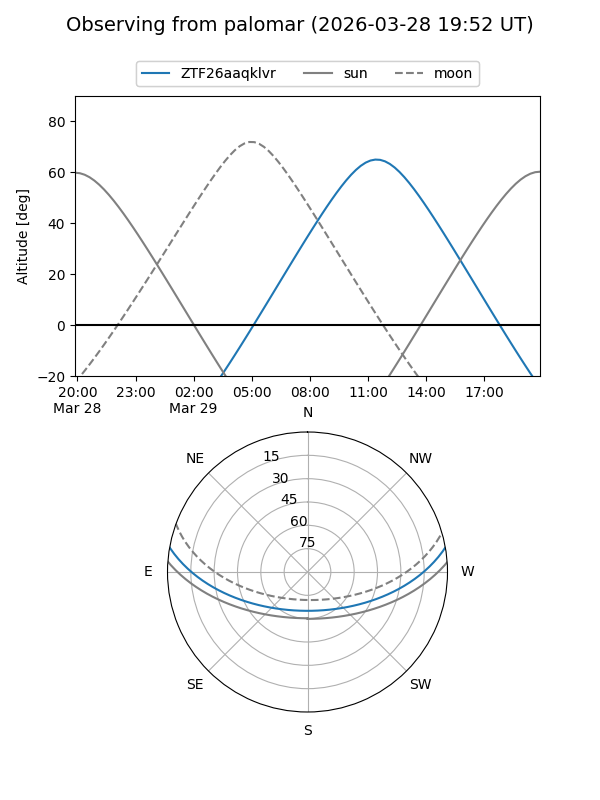

ZTF26aaqklvr
Target ZTF26aaqklvr at 2026-03-29 14:33
Aliases and brokers:
FINK: link
Lasair: link
ALeRCE: link
alt names
ZTF26aaqklvr (ztf,fink_ztf)
Coordinates:
equatorial (ra, dec) = 241.3721,+8.47294
equatorial (HMS+DMS) = 16:05:29.30,+08:28:22.60
galactic (l, b) = (20.1830,+40.56634)
Flags:
Photometry:
last ztfg=17.24
1 ztfg detections
Lightcurve

Visibility


Additional plots